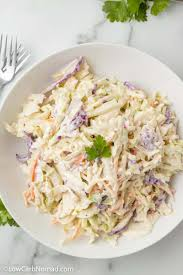
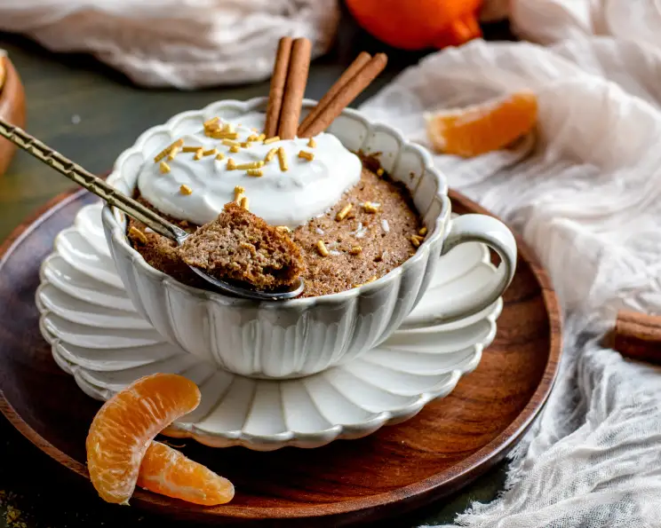

Low-Carb Slaw
Fantastic! Comes together quickly. You can sub chicken, shrimp, or any proteins. All will be super yummy.
Shrimp Scampi with Squash "Linguine"
This is a restaurant-quality meal that's delicious and ready in minutes — you just can't beat that!
One Minute Flax Muffin
Now I can have a muffin in any flavor I want in just a few minutes. No big batch to tempt me. This recipe seems very versatile.